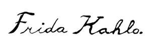

Trade Mark Journal No.2025/040 3 October 2025
UK00004194734 25 April 2025 (3,9,11,14,16,18,21,24,25,27,28,30,32,33,34,35,41,43,45)

International priority date claimed: 11 April 2025
(European Union Intellectual Property Office (EUIPO))
(019171402)
- Class 3
- Toiletries; Products for cleaning and perfuming, other than for personal use; Eau de parfum; Eau de toilette; Perfumed creams; Aromatherapy creams; Fragrances; Perfumes; Facial oils; Micellar water; Colorants for toilet purposes; Cosmetics in the form of creams; Cosmetic powders; Functional cosmetics; Cosmetics for use on the skin; Beauty care cosmetics; Deodorants and antiperspirants; Face and body creams [cosmetics]; Skin cleansing foams; Body gels; Soaps and gels; Face and body butters; Make-up; Face and body masks; Serums for cosmetic use; Cleaning oils; Scented waters for laundry; Detergents; Household fragrances; Bleaching preparations; Cleaning products; Tailors' and cobblers' wax.
- Class 9
- Eyewear pouches; Fashion eyewear; Sunglasses; Spectacle frames and sunglasses; Mobile applications; Bags adapted for computers; Bags adapted for tablet computers; Cases for electronic tablets; Covers for laptops; Smart glasses; Hardware; Cases for laptops; Cases for lenses; Electronic book reader covers; Cases for digital media players; Cases for mobile phones; Cases for smart phones; Holders for mobile phones; camera casings; Headphones.
- Class 11
- Lighting apparatus; Chandeliers; Cooking appliances; Electric coffee pots; Refillable tea capsules; Refillable coffee capsules; Electric coffee filters; Tea filters [machines]; Electric waffle makers; Ice cream makers; Tea making machines; Gas burners; Kettles [electric]; Electric coffee roasters; Bread toasters; Electric cooking utensils; Hot-air guns; Electric heating apparatus; Ventilation apparatus and installations; Air-cooling devices.
- Class 14
- Fittings for watches; Horological articles; Watch chains; Clock cases; Pendants for watch chains; Alarm clocks; Automatic watches; Wristwatches; Watches and parts thereof; Imitation jewellery ornaments; Tie-pins; Charms [jewellery]; Rings [jewellery]; Body jewellery; Semi-precious jewellery; Brooches [jewellery]; Bangles and bracelets; Chains [jewellery]; Pendants; Tiaras [diadems]; Cuff links; Precious jewellery; Medals; Medallions; Earrings; Anklets; Cufflink boxes; Jewellery cases; Jewellery boxes; Key rings; Key chains; Key charms; Key rings and key chains and their charms; Dress ornaments in the nature of jewellery; Ornamental hat pins; Collectable coins; Pieces of silver art; Works of art and ornaments, including sculptures, made mainly of or plated with precious or semi-precious metals or stones, or imitations thereof; Works of art and decorations, including sculptures, made primarily of precious or semi-precious metals or stones, or their imitations, or coated with these.
- Class 16
- Paper tape; Stickers for use in art; Adhesive corners for photographs; Adhesive paper; Carrier bags; Paper bags; General purpose plastic bags; Gift bags; Box files; Paper boxes; Cardboard display boxes; Gift packaging; Paper gift tags; Bows for decorating packages; Modelling clay; Drawing instrument trays; Paint trays; Paint brushes; Paint easels; Paint boxes; Paint charcoals; Printed decals for embroidery or fabric appliqués; Decorative paper centrepieces; brushes for the application of paints; Crayons; Writing or drawing books; Paper cake toppers; Drawing sets; Canvas prints; Drawing squares (rulers); Paper garlands; Paper badges; Drawing instruments; Painting kits for arts and crafts; Pencils; Drawing books; Canvas panels for artists; Drawing materials; Artists' materials; Painter's palettes; Pastels [paints]; Paintbrushes; Rulers; Chalk holders; Coloured pens; Sketch boards; Picture framing mat boards; Chalk; Agendas; adhesive transfers; Writing materials; Stationery; Pencil trays; Jotters; Sketchbooks; Sketches; Pencil pots; Stickers; Calendars; file Folders; Caricatures; Catalogues; Collages; Blank diaries; Stationery boxes and cases; Paper labels; Booklets; Book or notebook covers [stationery]; Artistic prints; Printed charts; Prints; Coloured pencils; Notebooks; Printed manuals; Bookmarks; Writing materials; Printed matter, stationery and educational supplies; Stencils for nails; Inks; Metal clips for banknotes.
- Class 18
- Luggage, bags, wallets and other carriers; walking sticks; leather boxes; imitation leather; faux fur; leather cloth; pocket wallets; bags; fashion bags; satchels; sack bags; baby carriers; key cases; suitcases; briefcases; rucksacks; purses; knapsacks; haversacks; cosmetic bags; fanny packs; bum bags; travel sets; umbrellas; parasols.
- Class 21
- Bowls [basins] ; Soap racks; Cosmetic stands; Flower-pot covers, not of paper; Flower vases; Vases; Flowerpots; Shoehorns; Plastic containers for dispensing pet food; Works of art and decorations, including sculptures, made primarily of ceramics or glass, or of substitutes for these; Glassware; Make-up removing appliances; Cosmetic applicators; Powder puffs; Buckets made of woven fabrics; Exfoliating brushes; Sponges; Comb cases; Soap dispensing bottles; Combs; Powder compacts; Cosmetic utensils; Make-up brushes; Brooms; Aromatic oil diffusers, other than reed diffusers; Potpourri dishes; Perfume vaporizers; Candle extinguishers; Knife rests; Crystal [Glassware]; Earthenware; Porcelain ware; Trays for household purposes; Cookware, except forks, knives and spoons; Bottles; Bottle stands; Jars; Non-electric coffee pots; Candlesticks; Picnic boxes; Coupes; Serving spoons; Salad bowls; Shakers for spices; Fruit bowls; Fruit bowls; Dishes; Egg cups; Censers; Storage tins; Plastic placemats; Liquor trays; Confectionery moulds; Coffee grinders; Mortars for kitchen use; Bottle openers, electric and non-electric; Beverage stirrers; Cocktail Shakers; Decanters; Goblets; Cup holders; Glass stands; Drinking glasses.
- Class 24
- Household textile articles; Lining [textile]; Materials for soft furnishing; wall hangings [textile]; Traced clothes for embroidery; Textiles for interior decoration; Curtains; Badges made of textile fabric; Iron-on cloth labels; Table runners [textiles]; Table covers; Table linen; Textile tablecloths; Textile placemats; Textile bottle mats and coasters; Textile towels; Facial towels; Quilts; Bedspreads; Picnic blankets; Bed covers; Bed linen and table linen; Sheets; Bed throws.
- Class 25
- Parts of clothing, footwear and headgear; Headgear; Footwear; Heels; Overcoats; Coats; Sport Coats; Bathrobes; Blouses; Bermuda shorts; Socks; Shirts; Waistcoats; Shawls; Jackets [clothing]; Men's and women's jackets, coats, trousers and waistcoats; Belts; Ties; Collars [clothing]; Skirts; Stoles; Gabardines; Jerseys [clothing]; Leggings; Aprons; Mantles; Stockings; Bow ties; Trousers; Tights; Pants; Panties; Sarongs; Kerchiefs [clothing]; Ponchos; Knitwear [clothing]; Evening wear; sportswear; Outer clothing; Sweat shirts; sweaters; Tops [clothing]; Veils [Clothing]; Espadrilles; Boots; Flip-flops; Sneakers; Shoes; footwear.
- Class 27
- Carpets, rugs and mats; Wallpaper; Wall coverings.
- Class 28
- Appliances for gymnastics; Sports and gymnastic articles; Photo props; Games; Toys; Dolls; Doll costumes; Shoes for dolls; Piñatas; Masks [playthings]; Puppets; Puzzles [toys]; Christmas tree decorations and ornaments; Paper party favours.
- Class 30
- Sugar, natural sweeteners, sweet coatings and fillings, bee products and edible decorations; Coffee, teas, cocoa and substitutes therefor; Processed grains, starches and goods made thereof, baking preparations and yeasts; Salts, seasonings, flavourings and condiments; Ice cream, frozen yogurts and sorbets.
- Class 32
- Non-alcoholic beverages; Beer and non-alcoholic beer; Non-alcoholic Preparations for making beverages.
- Class 33
- Alcoholic beverages (except beer); Alcoholic essences and extracts; Preparations for making alcoholic beverages.
- Class 34
- Tobacco and tobacco products (including substitutes); articles for use with tobacco; personal vaporisers and electronic cigarettes, flavourings and other solutions therefor.
- Class 35
- Business assistance, management and administration services; promotional, marketing and advertising services; import and export services; Wholesale, retail and computer network services of non-medicated cosmetic and toilet preparations, non-medicated dentifrices, perfumery products, essential oils, bleaching preparations and other substances for laundry use, cleaning, polishing, scouring and abrasive preparations, spectacle bags, spectacles and spectacle accessories, spectacle cases and spectacle accessories, spectacle cases and spectacle accessories, spectacle cases and spectacle accessories, spectacle cases and spectacle accessories, spectacle cases and spectacle accessories, Cleaning, polishing, scouring and abrasive preparations, Spectacle bags, Spectacles and spectacle accessories, Mobile telephone cases and holders, Headphones and earphones, Apparatus and installations for lighting, heating, cooling, cooking, boiling, drying, ventilating, water supply and sanitary purposes, Precious metals and their alloys, Articles of jewellery, Precious and semi-precious stones and their alloys, Articles of jewellery, Precious and semi-precious stones, Clocks and watches and chronometric instruments, Paper and paperboard, Printed matter, Bookbinding material, Photographs, Stationery and office requisites, except furniture, Adhesives for stationery or household use, Drawing materials and artists' materials, Brushes, Instructional and teaching material, Sheets, films and bags of plastics for wrapping and packaging, printing characters, printing blocks, leather and imitation leather, animal skins, luggage and transport bags, umbrellas and parasols, walking sticks, collars, leashes and clothing for animals, utensils and containers for household and culinary use, kitchen utensils and tableware, except forks, knives and spoons, combs and sponges, brushes, cleaning materials, unworked or semi-worked glass, except glassware, glassware, china and earthenware, glassware, porcelain and earthenware, cleaning materials, unworked or semi-worked glass, except glassware, glassware, china and earthenware, except forks, knives and spoons, Combs and sponges, Brushes, Cleaning materials, Glass, unworked or semi-worked, except glassware, Glassware, porcelain and earthenware, Textiles and textile substitutes, Household linen, Curtains and drapes, Curtains and interior blinds of textile or plastic materials, Clothing, footwear, headgear, Carpets, rugs, mats, matting, linoleum and other floor coverings, Wall hangings other than of textile materials, Games and toys, Video games apparatus, Gymnastic and sporting articles, Christmas tree decorations, Coffee, tea, cocoa and substitutes therefor, Rice, pasta and noodles, Cereal flours and preparations, pastry and confectionery, Chocolate, Ice cream, Sugar, honey, Salt, seasonings, spices, preserved herbs, Vinegar, sauces and other condiments, Beers, Non-alcoholic beverages, Mineral waters, Fruit drinks and fruit juices, Syrups and other preparations for making non-alcoholic beverages, Alcoholic beverages except beers, Alcoholic preparations for making beverages, Tobacco and tobacco substitutes, Cigarettes and cigars, Electronic cigarettes and oral vaporisers for smokers, Articles for smokers, Matches.
- Class 41
- Publishing, editing and copywriting; Education, entertainment and sport services; Art exhibition services; Arranging of displays for cultural purposes; Arranging of exhibitions for cultural or educational purposes; Cultural, educational or entertainment services provided by art galleries; Running of museums.
- Class 43
- Provision of food and drink; Temporary accommodation services; Bars [pubs]; Restaurant services [food and drink].
- Class 45
- Legal administration of licences; Legal advice; Licensing of intellectual property in the field of trademarks [legal services]; Consultancy relating to the licensing of intellectual property; Management of trademarks; Industrial property management; Trademark watch services.
Frida Kahlo Corporation
Representative: Potter Clarkson LLP